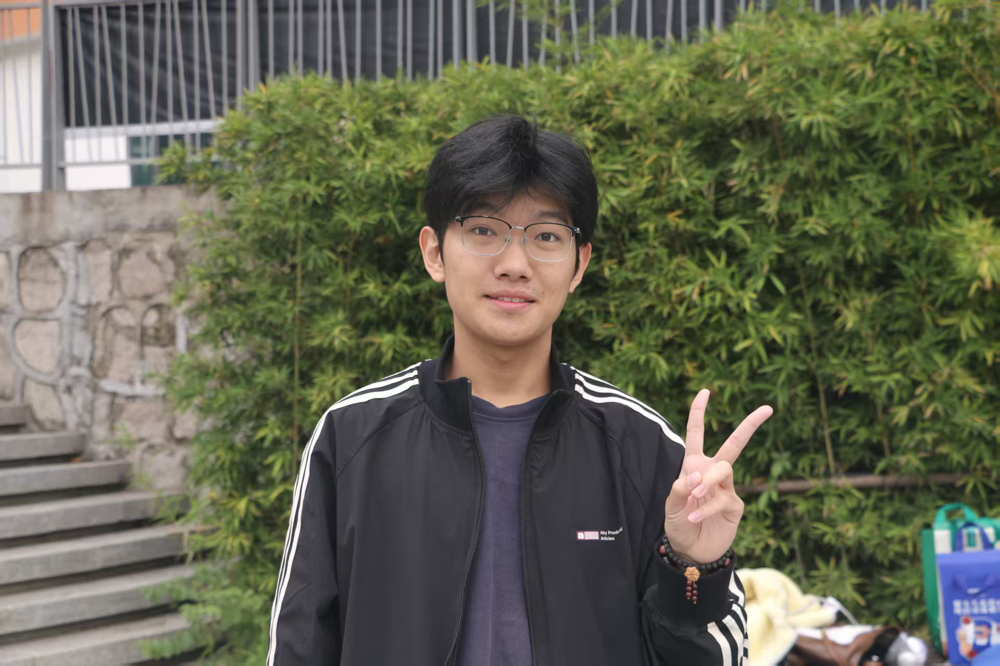
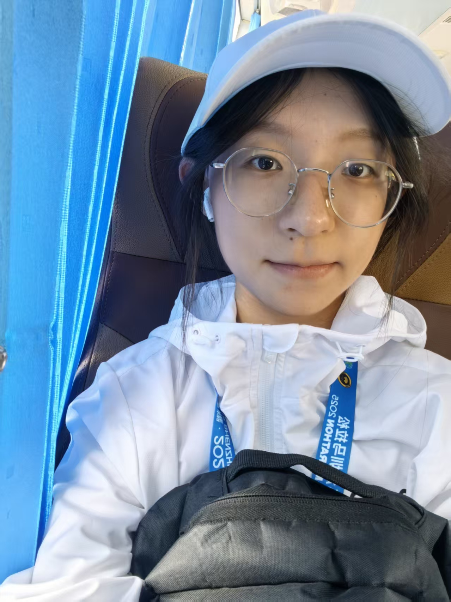
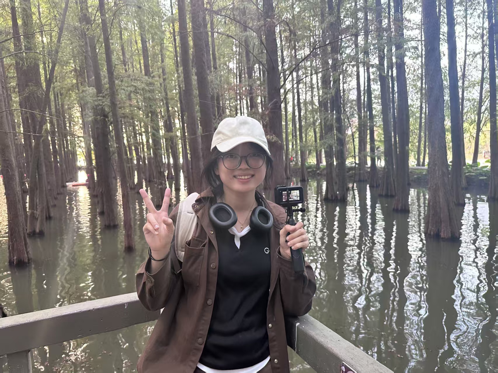

Team Attributions
SZPU-2026 Team Contributions, External Support, and Project Timeline
Team Member Contributions
Core team members and their specialized roles in the SZPU-2026 project
Yongjun Tang
Primary Investigator
[待补充]

Jie Xia
Team Leader Wet Lab
Leads overall team organization and project timeline management. Coordinates wet lab experimental operations, including molecular cloning and protein expression experiments. Oversees inter-group communication between wet lab, dry lab, and human practices teams to ensure project progress stays on track.

Yifan Gao
Wet Lab Student Researcher
Conducts wet lab experiments including PCR, plasmid extraction, and agarose gel electrophoresis. Assists with data collection and maintenance of laboratory equipment. Supports team research through meticulous experimental record-keeping and reagent preparation.
Chengxi Luo
Wet Lab & Dry Lab HP Coordinator
Performs wet lab experiments while coordinating dry lab modeling activities. Manages team logistics including meeting scheduling, reagent inventory, and supply procurement. Bridges communication between experimental work and computational modeling teams to ensure data flows effectively between groups.
Rui Luo
HP Designer
Manages visual design for team presentations and wiki layout. Drafts and edits project description content for the team wiki. Coordinates external outreach activities including science communication events and inter-team collaboration initiatives.
Yuquan Luo
Dry Lab HP
Conducts computational analysis for the project, including sequence alignment and data visualization. Assists with human practices activities including stakeholder interviews and community engagement. Provides technical support for dry lab data processing and analysis workflows.
Siqi Peng
Designer HP
Creates visual design assets including team logo, poster layouts, and illustration diagrams for the project wiki. Designs presentation materials for science communication activities. Develops visual content that makes synthetic biology concepts accessible and engaging for non-technical audiences.
Xiaozhen Su
Wet Lab Chassis Strain Engineering
Engineers Saccharomyces cerevisiae BY4741 chassis strain using CRISPR/Cas9-mediated gene knockout to establish an optimized cellular host for exogenous signaling pathways. Knocks out STE2 to block endogenous α-factor mating signal input, FAR1 to release α-factor-induced cell cycle arrest enabling sustained growth during long-term monitoring, and SST2 to remove the G-protein signaling negative regulator and amplify GPCR-mediated signal response. Implements sgRNA design, pML104 vector cloning, LiAc/PEG chemical transformation, SD-Ura selection screening, and PCR sequencing validation.

Qi Xu
Web Developer Dry Lab
Develops the team wiki frontend including responsive layouts, interactive components, and CSS animations. Implements JavaScript functionality for timeline interactions, filtering systems, and dynamic content switching. Ensures cross-browser compatibility and accessibility compliance across all wiki pages.
Aishi Zeng
Wet Lab PAGER Sensor Construction
Designs and constructs the PAGER membrane-display fusion sensor protein implementing the molecular gating logic of "antigen-free autoinhibition, antigen-present disinhibition." Assembles the multi-component fusion protein from N- to C-terminus: α-factor signal peptide for membrane anchoring, MT1 autoinhibitory peptide for background suppression, anti-HA nanobody for specific influenza antigen recognition, TEV cleavage site for functional verification, and hM1Dq receptor for downstream G-protein signaling. Establishes the sensing mechanism where HA antigen binding sterically removes MT1 inhibition, enabling DCZ-mediated receptor activation.

Yuelin Zheng
Wet Lab Chimeric G-protein Engineering
Constructs humanized Gpa1/Gαq chimeric protein to establish a signal transduction bridge between human GPCR receptors and the yeast endogenous MAPK signaling pathway. Replaces the 5 C-terminal amino acids (KIGII) of yeast Gpa1 with the corresponding human Gαq sequence (EYNLV), preserving the main functional domain of Gpa1 while conferring human G-protein receptor binding specificity. Implements homologous recombination-based genomic integration at the GPA1 locus using ~500bp upstream/downstream homology arms and URA3 selection marker, with SD-Ura screening to identify positive integrants.
Chenxi Luo
Wet Lab Reporter System Construction
Builds MAPK-responsive reporter systems converting upstream antigen recognition signals into measurable outputs. Constructs two parallel reporter plasmids using pESC-HIS as the backbone: the FUS1 promoter-driven yEGFP reporter for quantitative fluorescence detection by flow cytometry, and the FUS1 promoter-driven lacZ reporter for colorimetric visualization by X-Gal staining. Implements restriction digestion and Gibson assembly cloning, chemical transformation into engineered yeast strains, and functional validation with gradient DCZ agonist induction (10nM to 1μM) alongside proper control groups.
Lizhen Zhu
Adviser Molecular Biology Guidance
Provides hands-on guidance for molecular cloning workflows including primer design. Reviews and refines experimental protocols to ensure reproducibility and proper controls are established before each major experiment.
Jianhua Zhou
Adviser Protein Expression Guidance
Advises on characterization assay design. Helps identify experimental bottlenecks and recommends troubleshooting approaches when expression yields are low.
Cross-Team Collaboration
Our team operates through integrated cross-functional collaboration. Wet lab members provide experimental data that informs dry lab modeling, while human practices activities are integrated into the project's design cycle. This interdisciplinary approach ensures that our engineering solutions are grounded in both scientific rigor and real-world applicability.
External Contributions
Organizations and individuals who provided valuable support to our project
[待补充 - 姓名/机构]
[待补充 - 具体贡献说明]
[待补充 - 姓名/机构]
[待补充 - 具体贡献说明]
[待补充 - 姓名/机构]
[待补充 - 具体贡献说明]
[待补充 - 姓名/机构]
[待补充 - 具体贡献说明]
[待补充 - 姓名/机构]
[待补充 - 具体贡献说明]
[待补充 - 姓名/机构]
[待补充 - 具体贡献说明]
Project Timeline
Key milestones and activities throughout our 2026 iGEM season — click bars for details

.png)
.jpg)